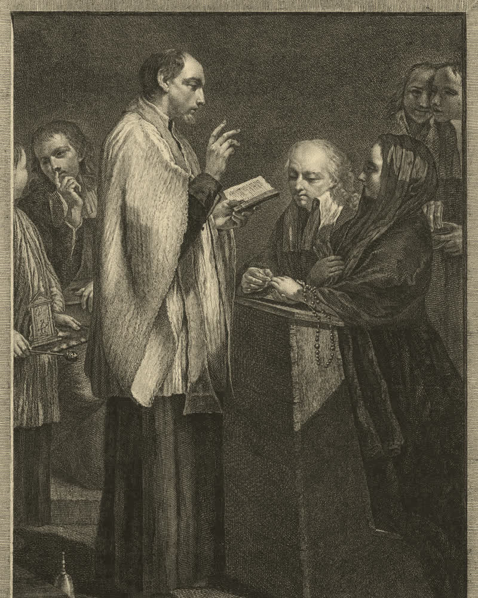

Marriage

Marriage
Getting married in the parish
We accompany you as you prepare your wedding and on every anniversary. To start, visit the parish office on Friday afternoons or write to us.
- Parish officeFriday afternoons
- AnniversariesSilver, ruby, golden, diamond…

Wedding anniversaries
Celebrate your silver, golden or diamond wedding
Celebrating years of marriage? At the parish you can give thanks to God for your marriage with a special blessing during Mass, together with your family and the whole community.
- 25Silver wedding
- 40Ruby wedding
- 50Golden wedding
- 60Diamond wedding
And any other anniversary you would like to celebrate.
Sacraments
Other sacraments
We are here to help
Any questions?
Write to us or drop by the parish office: on Friday afternoons, and before or after every Mass.